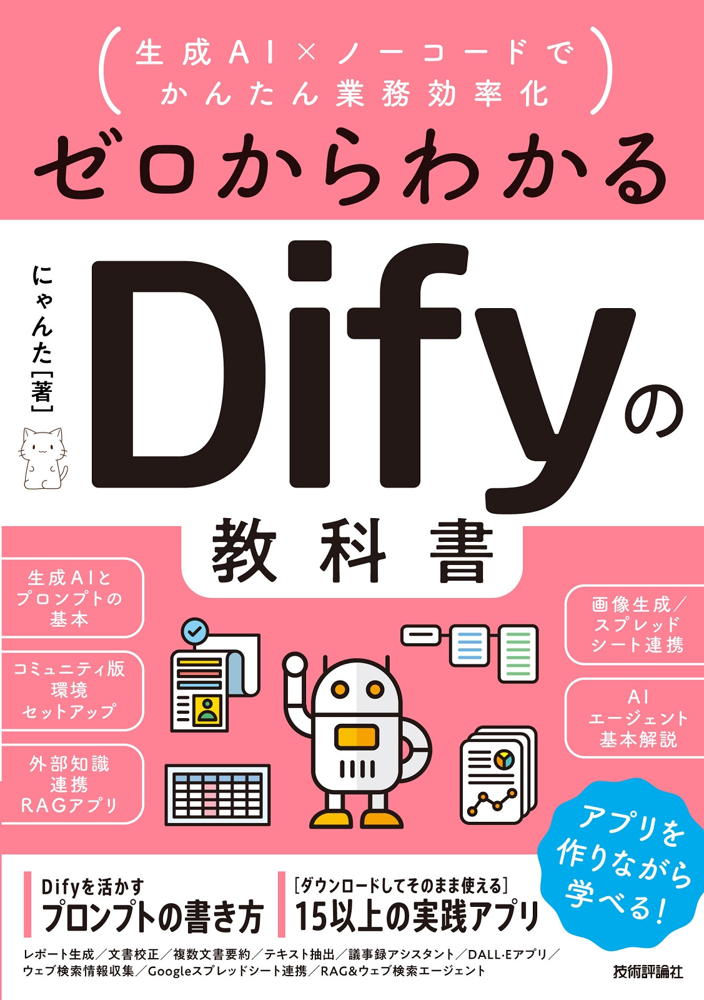

＼ YouTube「にゃんたのAIチャンネル」の著者が書いた、いちばんやさしいDifyの本 ／

〜生成AI×ノーコードでかんたん業務効率化
レゴブロックを組み立てるように、
生成AIアプリがつくれる。
紙の本・Kindle どちらも選べます
→ ひとつでも当てはまったら、この本はあなたのための教科書です。
Difyはノーコードツール。画面の上でブロックをつなぐだけで、生成AIアプリが動き出します。コードは1行も書きません。
エンジニアへの依頼も外注も不要。現場のことをいちばん理解しているあなた自身が作るからこそ、実務にフィットするアプリになります。
生成AIのしくみをゼロから解説し、RAG(社内文書検索)やAIエージェントまで体系的にステップアップ。360ページの「教科書」です。
手を動かしながら、実務で使えるアプリを次々に作っていきます。ぜんぶ、ノーコードで。
…ほかにも、業務がラクになるアプリの作り方をたっぷり収録。
著者本人がYouTubeで、Difyでの基本的なアプリの作り方を解説しています。本で学べる内容の雰囲気を、まずは動画でのぞいてみてください。
▶ 実際の操作は、こんな感じ。
基本のしくみ → 環境づくり → アプリ開発 → RAG・エージェントへと、階段をのぼるように学べる構成です。